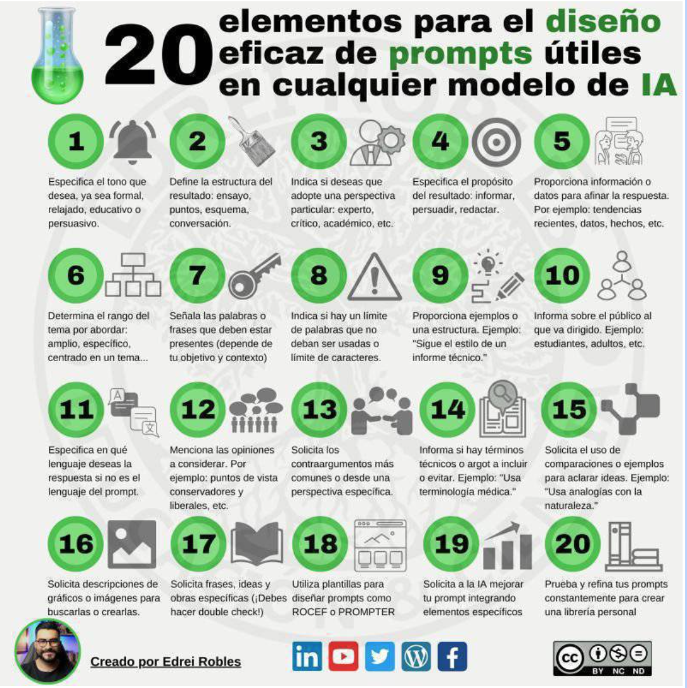

Wunderkammer
En el contexto de este proyecto, una Wunderkammer (o "Cámara de Maravillas") se puede interpretar como un espacio digital o conceptual en el que los estudiantes recolectan, organizan y exponen de manera creativa los descubrimientos, reflexiones y aprendizajes relacionados con la inteligencia artificial y el emprendimiento.
En lugar de ser una colección de objetos físicos como en las Wunderkammer tradicionales, aquí se trataría de una recopilación de elementos digitales y conceptuales que muestran:
- Ideas innovadoras sobre la aplicación de la IA.
- Hallazgos significativos de sus investigaciones.
- Ejemplos inspiradores de casos reales.
- Infografías, reflexiones y proyectos personales creados durante el curso.
Este enfoque no solo fomenta la curiosidad y la creatividad, sino que también transforma el aprendizaje en un proceso visual, interactivo y multidimensional. La Wunderkammer se convierte en un espacio donde los estudiantes pueden conectar conocimientos de diferentes disciplinas (tecnología, emprendimiento, diseño) y exponerlos de forma atractiva y significativa, demostrando su progreso y comprensión del tema.
Aquí tienes un artículo interesante sobre cómo hacer un buen promp:
https://www.lavanguardia.com/andro4all/tecnologia/mejores-prompts-basicos-chatgpt#index2
Obra publicada con Licencia Creative Commons Reconocimiento Compartir igual 4.0